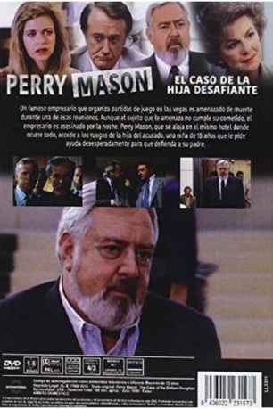

#6652 Perry Mason und der Trotzkopf
Alternativ: Perry Mason: The Case of the Defiant Daughter
 
 IMDB-Wertung: 7.1 / 10
IMDB-Wertung: 7.1 / 10  Metascore: 0
Metascore: 0 
Die junge Melanie wendet sich hilfesuchend an Perry Mason . Der Anwalt soll ihren Vater David verteidigen, der verdächtigt wird, den wohlhabenden PR-Manager Richard Stuart ermordet zu haben. Tatsächlich hatte David den zwielichtigen Richard beschuldigt, für den Tod seines Bruders verantwortlich zu sein, und ihn mit einer Pistole bedroht. Mason beginnt zu recherchieren und findet schon bald heraus, dass Richard Stuart mit ausgesprochen zweifelhaften Methoden sein Geld verdient hat.
Jahr: 1990
Dauer: 90 Minuten
FSK:
Land: USA Studio: NBCTonspuren: DD5.1 - ,
Untertitel:
Auflösung: 1080p (1424x1080) Größe: 4157 MB
Genre: Drama, Krimi, Mystery
Regisseur: Christian I. Nyby II
Drehbuch: Erle Stanley Gardner
Soundtrack:
Darsteller:
 Raymond Burr als Perry Mason
Raymond Burr als Perry Mason Barbara Hale als Della Street
Barbara Hale als Della Street William R. Moses als Ken Malansky
William R. Moses als Ken Malansky Jere Burns als Cliff Bartell
Jere Burns als Cliff Bartell- Robert Culp als Richard Stuart
- Ken Kercheval als L.D. Ryan
 Kevin Tighe als Steven Elliott
Kevin Tighe als Steven Elliott Robert Vaughn als Jay Corelli
Robert Vaughn als Jay Corelli- John Apicella als Martin Hochman
- Don Galloway als Sgt. Hollenbeck
 Harry Lennix als Prosecutor Keith Warner
Harry Lennix als Prosecutor Keith Warner- Jenny Lewis als Melanie Benson
 John Posey als David Benson
John Posey als David Benson- Michele Scarabelli als Ms. Young, Jennifer / Stephanie
- Denise Galik als Alice Sherman
 Jack O'Halloran als The Big Man
Jack O'Halloran als The Big Man- Lois De Banzie als Sarah Andrews
- Joe Horváth als Hood
- Valerie Karasek als Belinda Foster
- Ron Pinkard als Judge McElvy
- Luann Buckstein als Elaine Hochman
- Michael Leopard als Alice's husband
Datei: X:\Person\Perry Mason\Perry Mason und der Trotzkopf (1990, FSK, 1424x1080).mkv seit 28.07.2017
Festplatte: HD Collection-7+mehr(A-Z)+Person
 Es gibt insgesamt 20 Filme in der Gruppe 'Person\Perry Mason'
Es gibt insgesamt 20 Filme in der Gruppe 'Person\Perry Mason'